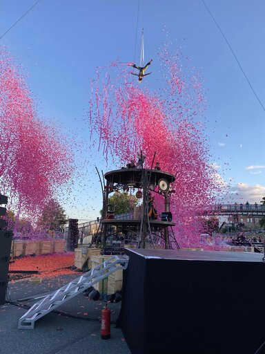
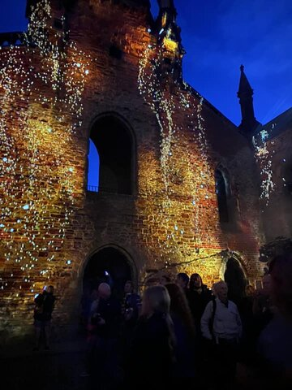

SIRF'22
In 2022 SIRF returned to Stockton for the first time since 2019. It launched with the thrill and amazement of French company Gratte Ciel’s massive scale spectacle Tawa. As live music filled the air and heated the atmosphere around, aerialists and acrobats spined in a dramatic unforgettable explosion of colours on Stockton Riverside with breath-taking acts of human strength and resilience.
A small group of audience definitely felt privileged to be present there contemplating tremendous incredible show that was worth to be displayed in any capital of the whole world. It was so difficult to believe that so few people decided to do something different on their Thursday evening and, instead of watching TV or relaxing in the garden, chose to come to a lovely place of Stockton Riverside with three bridges across the river to witness inspiring show.
The rest of three days people were able to choose whatever they preferred spending the whole day in the down centre just moving from one place to another because each corner was literally packed with fun, amusement and joy.
All evening performances were memorable and captivating like, for instance, a fire show Envol, by Entre Terre et Ciel, or performance of light, texture and movement by a team of Limbic Cinema, Full Tilt Aerial and South Korean composers Salamanda that had a place in an ancient Trinity Church.
 